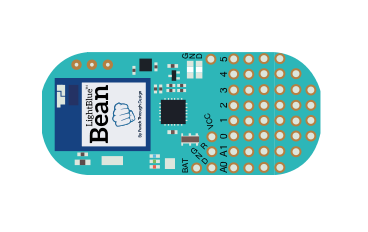
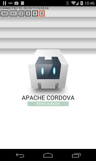
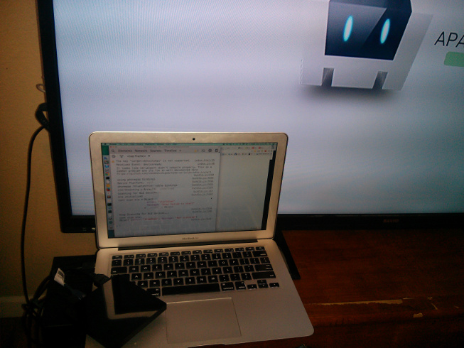

beanbots rise of the swarm
september 15th 2014
I spent a good deal of my time over the last few years at a hackerspace called HeatSync Labs. While I would constantly see members wiring up things like an Arduino Uno or a Raspberry Pi, I tended to just stay in my Node.js and HTML5 world for the most part.
That was until I finally read Chris Williams' excellent post: NodeBots - The Rise of JS Robotics
We now have some really cool building blocks such as node serialport, firmata.js, and Johnny-five. While we're not quite at the point of Michael Chrichton's solar-powered, self-replicating, networked, cloud of nanobots), we're definitely moving towards it :)
Enter the Bean
A really cool piece of hardware to come out recently is Punchthrough's LightBlue Bean.

The reason I'm digging this little guy is that it's basically a low cost Arduino Uno plus Bluetooth Low Energy (BLE) powered by a coin cell battery. BLE lets us talk to the device while only using a tiny fraction of the power that would otherwise be required with WiFi.
So the next logical step would be to load firmata onto the bean, connect to it with node and the noble BLE library, and build our new insect overlords.
What is firmata?
Firmata is a few things.
First, it's a protocol that enables us to communicate to a microcontroller in a generic way. Typically this is done over a serial port.
Second, it's an Arduino sketch that can be loaded onto various types of Arduino microcontrollers exposing the functionality to the hardware's serial input. Jacob Rosenthal has recently put together a fork of this code that works well on the Bean. He also wrote up an interesting blog post about it.
Third, there's firmata.js. This is a javascript/node library that can talk via node serialport to a device running a firmata sketch and read/write values to the pins on the board. The current implementaion requires a small amount of handshaking at start up that I personally felt was unecessary, so for now I'm using my fork of firmata.js for this project.
Let's add some Bean-IO
In order to make this easier to get started with, I've put together an IO class called Bean-IO.
npm install bean-ioBeing able to read and write pin values is essential to making the robots be robots, however there is a significant amount of complex algorithms involved in doing things such as having the robot go to the kitchen and get you a cold beer from the fridge. For this, we have Rick Waldron's amazing Johnny-Five project.
By default, you can plug in an Arduino Uno to your computer and fire up a johnny-five example to talk to it. The hardware input and output handling is firmata and node serialport. However, there are multiple types of hardware we can use. Each new type of hardware is handled through an IO class. There are IO classes for BeagleBone, Raspberry Pi, Galileo, Pinoccio, Spark Core, and now LightBlue Bean.
Using Bean-IO is pretty straight forward.
Make sure you have Jacob's StandardFirmata.ino firmware loaded onto your Bean device. The Punchthrough's Getting Started guide can help you with that.
Then just plug the bean-io into johhny-five and get to roboting:
var five = require("johnny-five");
var beanio = require("bean-io");
var board = new five.Board({
io: new beanio.Board()
});
board.on("ready", function() {
var led = new five.Led({pin: 13});
led.blink();
});But what about mobile?
Funny you should ask.
I've done some work with Octoblu on noble (node BLE) to allow the same API to be used in node.js or a phonegap/cordova app.
This means we can get Bean-IO onto Android and iOS in a simple cross-platform way.
For an example I put together a simple cordova application that allows you to click buttons to toggle the digital pin states on a bean.

(yes that is a horrific UI. Just threw something together, PRs appreciated :) )
But what about TVs?
OK nobody asked that, but Google sent me a developer device(ADT-1) and it has bluetooth 4, so figured I'd give it a shot...

Pretty close, but no dice. Should be fixable. I'm really happy that the tv took a cordova app to begin with. Here's a bug report I' have open on the underlying cordova BLE library.
The sooner every home has benevolent nodebots watching over us the better.
Next Steps
Jacob Rosenthal has already put together a very low power BeanBot prototype that we can control with javascript:
He's detailed the construction of it here.
Now perhaps a Pi/Galileo/BeagleBone/Edison with a BLE dongle could be the hive overlord controlling a swarm of Beanbots?
Maybe the BeanBots could lie in wait while they charge up with solar power, ready to save the day when called on?
Exciting times :)
-Luis